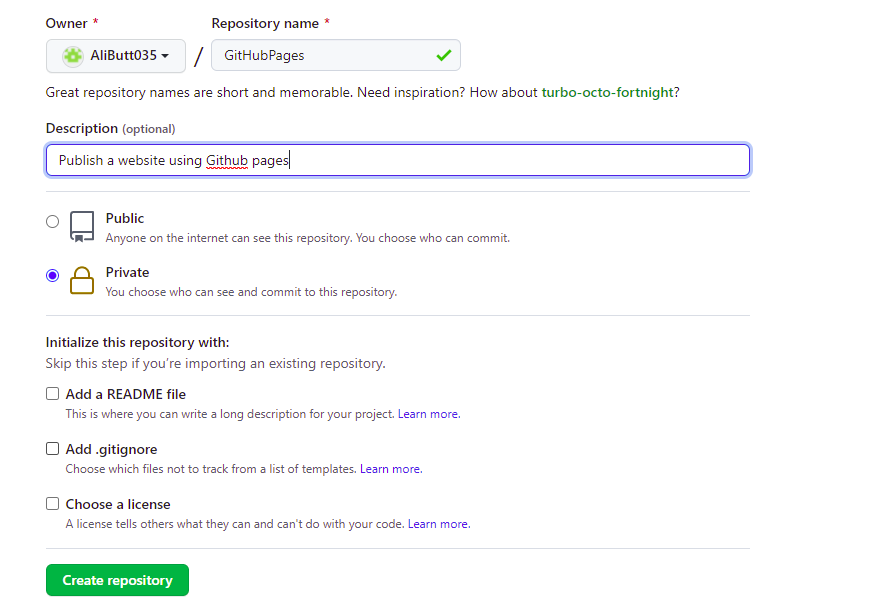

Guide on how to create your first local Repository and link it with Github
- Firstly you need to sign up on Github
- After this click on the Create new Repository in menu bar.
- After filling out the name and decription of repositiory click the Create new Repository Button

- Download and install Git from the link https://git-scm.com/download/win
- Create a Folder and in the Folder Right click and Click Git Bash Here Option
- Git bash terminal will open then write this command and enter git init
init Command initiate a local in the current folder.
- To Check the Status of Git use this command git status
.png)
At this stage the files are in unstaged position.
- Add these files in staged area using the command git add .
.png)
- To Commit the changes use the command git commit -m "message"
.png)
- If you make any changes than status changes and the changed files resides in unstaging area.
.png)
- To make files ready to add on unstaging area use this command git add index.html
.png)
- Now again to add the files to staging area use the previous command.
.png)
- Commit the changes and saved them.
.png)
- To link the remote Repository with your computer's local Repository use this command git remote add origin url.
.png)
- To push the branch master's work to origin remote Repository use this command git push -u origin master
.png)
- To see that files are uploaded to web repositiory go to Git hub on Chrome and refresh the page.
Files are uploaded with track of time.